Lasagna supports three generation modes: background-conditioned foreground generation, foreground-conditioned background generation, and text-to-all layer generation, which flexibly handle different inputs and jointly synthesize coherent, high-quality composites, backgrounds, and transparent foregrounds with realistic visual effects.
The Framework of \ours{}
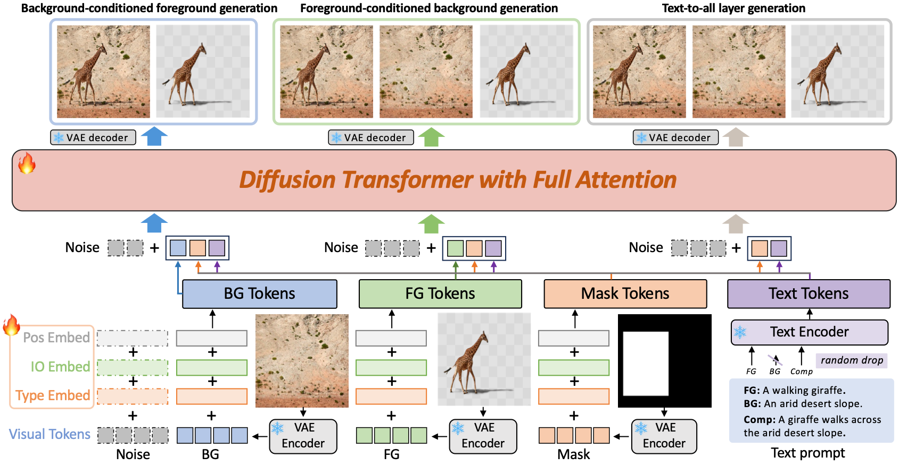
Pipeline of \ours{} framework. We formulate the joint generation of composite images, backgrounds, and foregrounds as a flexible, layer-conditional denoising task. This single framework supports multiple workflows, including FG_Gen, BG_Gen, and Text2All. We use a unified input representation with learnable embeddings that distinguish different roles of visual latents (noise, BG, FG, and mask) across tasks, enabling the model to adapt its behavior under various generation settings. This allows a single attention-based model to flexibly process varied combinations of inputs and targets simultaneously.
Data Construction Pipeline
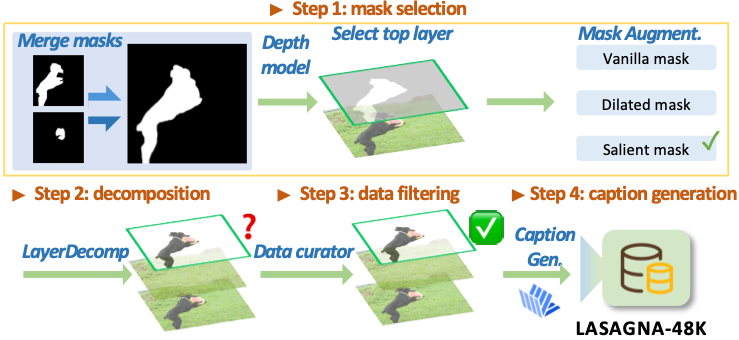
Data construction pipeline. Starting with existing datasets, we implement a four-stage data construction pipeline leveraging off-the-shelf models with a custom-trained data curator. This process yields a high-quality dataset as the foundation for subsequent model training.
Samples of \dataset{} and \benchmark{}
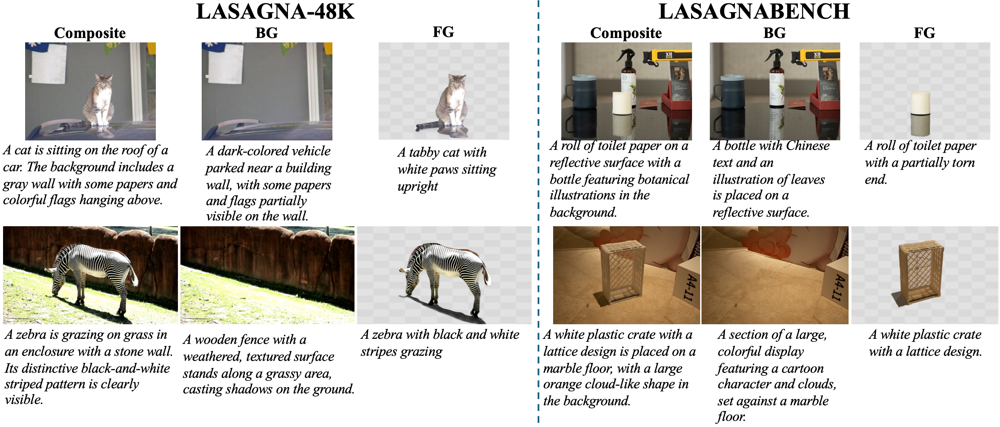
Samples of \dataset{} and \benchmark{}. Each row shows a composite image, a clean background, and a foreground layer with visual effects, along with corresponding captions for all components.
Experimental Results
LASAGNA vs General Models
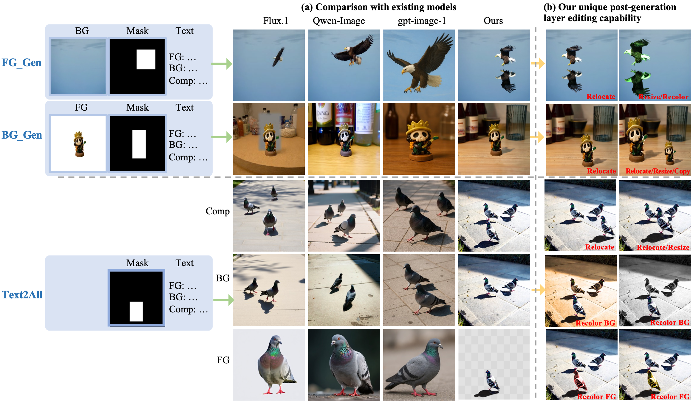
Layer generation compared with state-of-the-art image generation and editing models. We compare LASAGNA with Flux.1 [1], Qwen-Image-Edit [2], and gpt-image-1[High] [3]. (a) Across three distinct generation tasks, LASAGNA consistently achieves superior inter-layer coherence and consistency. In contrast, competing models often fail to maintain these properties. (b) Moreover, by generating foregrounds with faithfully preserved visual effects, LASAGNA enables diverse post-generation editing operations on individual layers directly—a capability not supported by existing models.
LASAGNA vs Expert Model
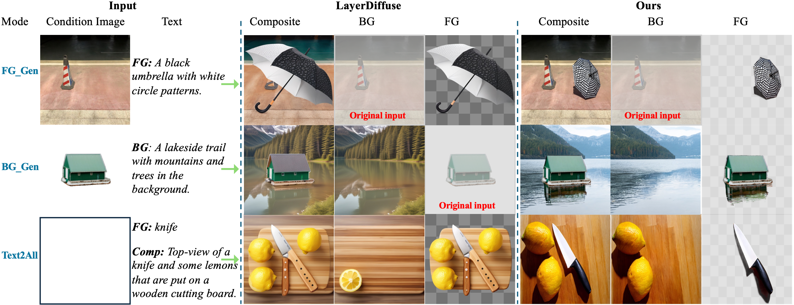
Layer generation compared with LayerDiffuse [4]. In FG_Gen, our model produces object with appropriate size and position, along with realistic shadows consistent with the background. In BG_Gen and Text2All, our model produces visually consistent results across all layers. Furthermore, it can generate new foregrounds with corresponding visual effects, enabling flexible and realistic post-editing.
Layer Editing with Visual Effects
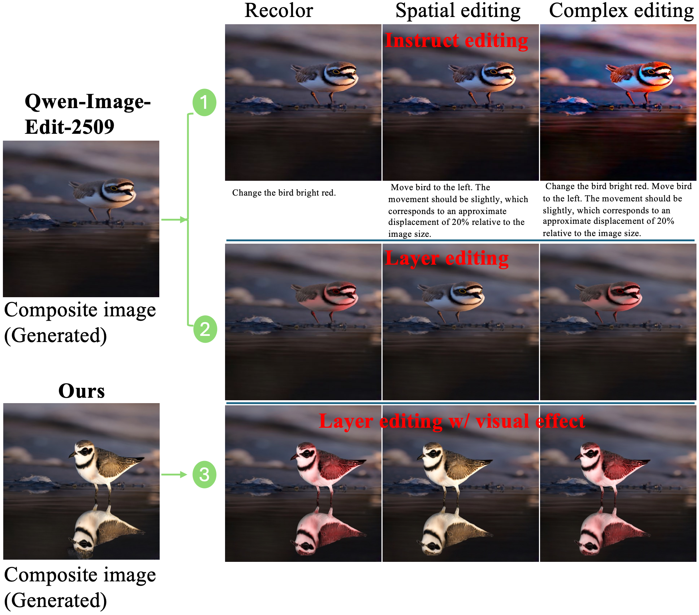
Layer editing with visual effects. We demonstrate the benefits of explicit layer representations with visual effects by comparing three paradigms: Instruct Editing, Layer Editing, and Layer Editing with Visual Effects (LASAGNA). Across recoloring, spatial, and compositional editing tasks, the lack of explicit layer representations makes Instruct Editing prone to unintended changes and less responsive to spatial instructions, while Layer Editing with Visual Effects yields more coherent and photorealistic results.
Creative Applications Powered by LASAGNA
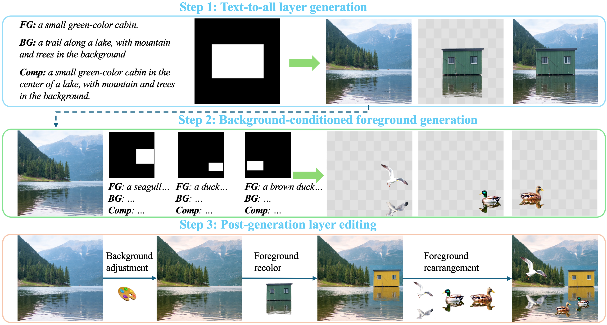
Diverse creative applications driven by our model. We leverage both Text2All and FG_Gen modes to jointly guide the synthesis process, unlocking a broader range of editing possibilities and producing diverse, visually appealing results.
More Visualization Results
Background-conditioned Foreground Generation
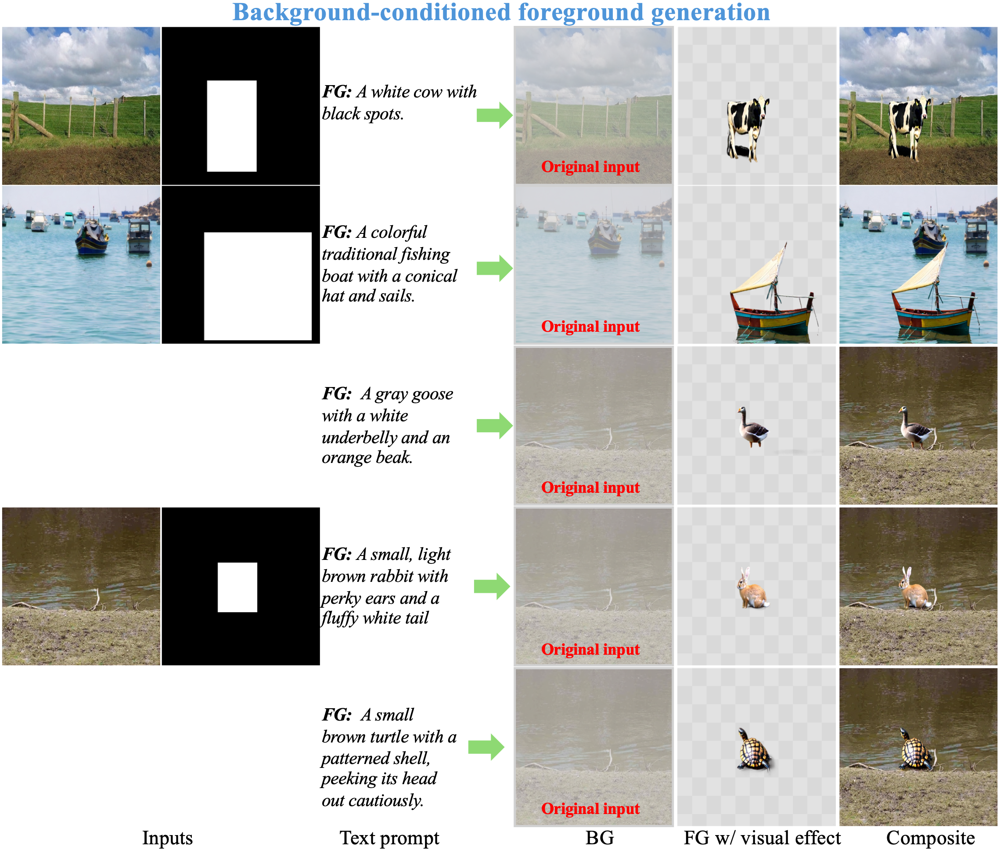
More results from \ours{} under the background-conditioned foreground generation (FG_Gen) mode.
Foreground-conditioned Background Generation
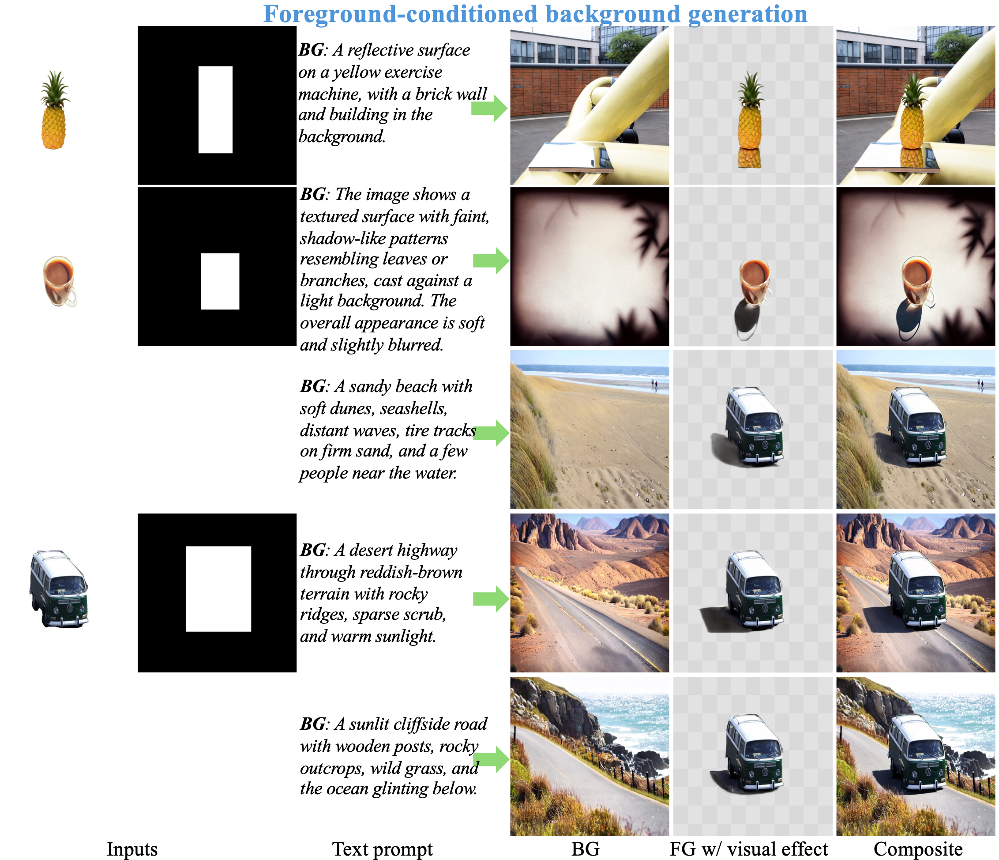
More results from \ours{} under the foreground-conditioned background generation (BG_Gen) mode.
Text-to-all Layer Generation
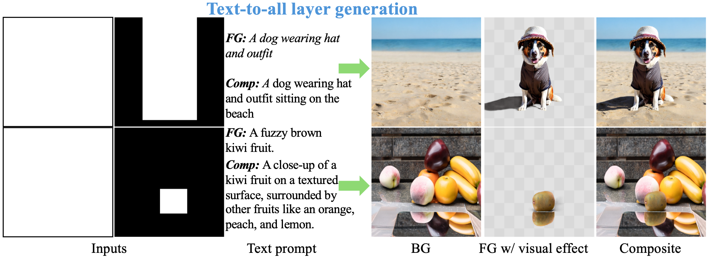
More results from \ours{} under the text-to-all layer generation (Text2All) mode.
More Samples of \dataset{}
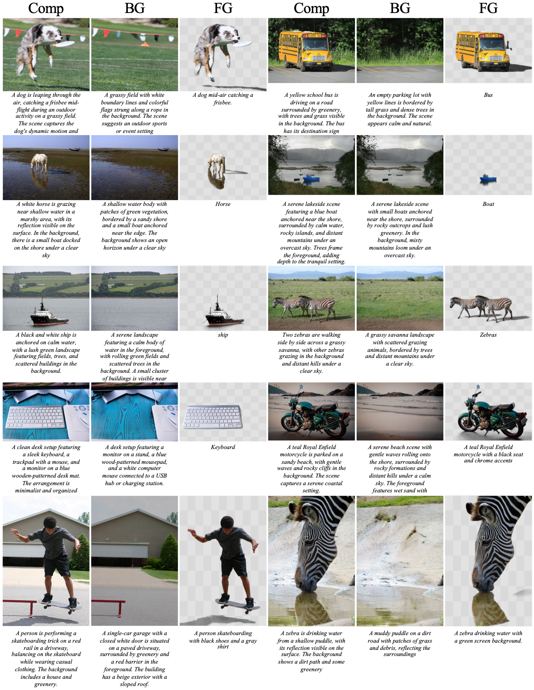
More samples of \dataset{}. Each sample consists of a composite image, a clean background, and a foreground layer with visual effects, along with corresponding captions for all components.
More Samples of \benchmark{}
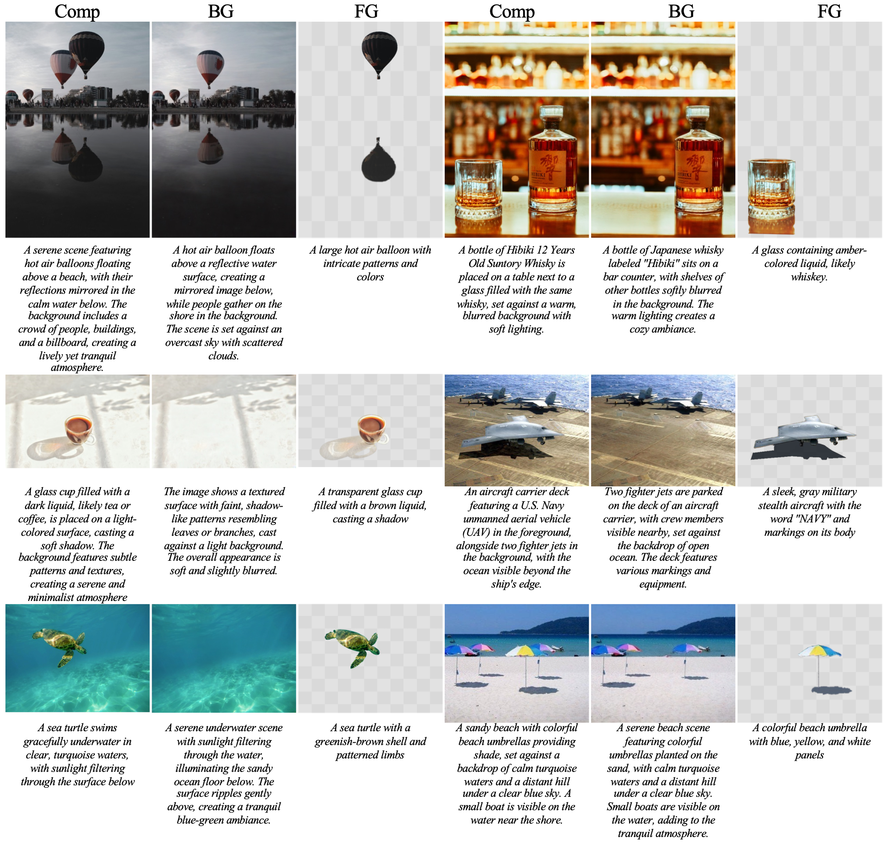
More samples of \benchmark{}. Each sample consists of a composite image, a foreground layer with visual effects, and a clean background along with corresponding captions for all components. Foreground with visual effects annotated by professional annotators. Background are decomposed by expert models or captured by camera.
The image examples come from MULAN [5], COCO 2017 [6], SOBA [7], and Unsplash [8,9,10,11].
References
[1] Black Forest Labs, Stephen Batifol, Andreas
Blattmann, Frederic Boesel, Saksham Consul,
Cyril Diagne, Tim Dockhorn, Jack English, Zion
English, Patrick Esser, et al. Flux. 1 kontext: Flow
matching for in-context image generation and editing
in latent space. arXiv preprint arXiv:2506.15742,
2025.
[4] Lvmin Zhang and Maneesh Agrawala. Transparent image layer diffusion using latent transparency. arXiv
preprint arXiv:2402.17113, 2024.
[5] Tudosiu, Petru-Daniel, et al. "Mulan: A multi layer annotated dataset for controllable text-to-image generation." Proceedings of the IEEE/CVF Conference on Computer Vision and Pattern Recognition. 2024.
[6] Lin, Tsung-Yi, et al. "Microsoft coco: Common objects in context." European conference on computer vision. Cham: Springer International Publishing, 2014.
[7] Wang, Tianyu, et al. "Instance shadow detection with a single-stage detector." IEEE transactions on pattern analysis and machine intelligence 45.3 (2022): 3259-3273.